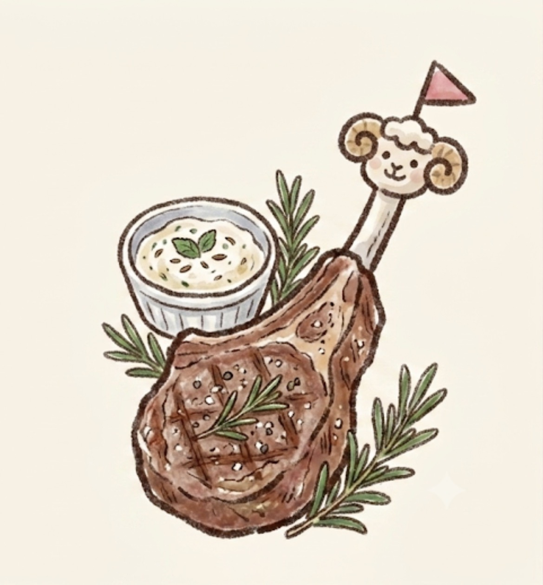
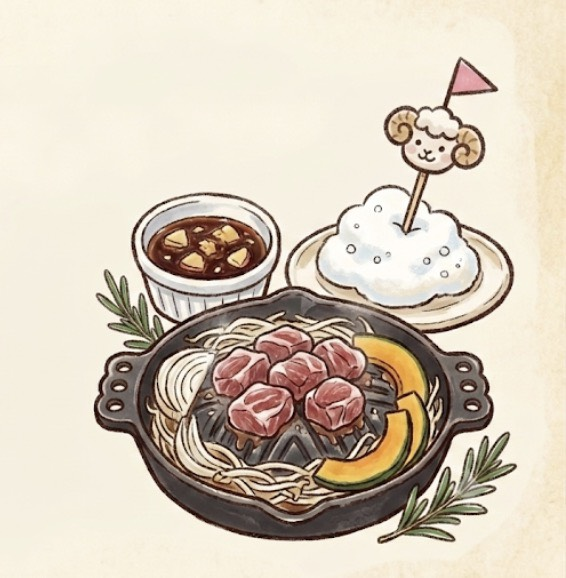
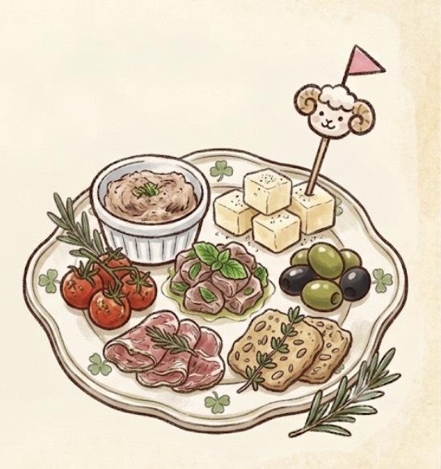
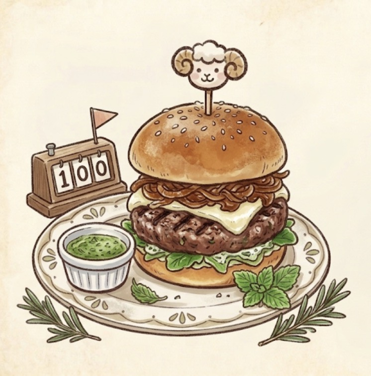
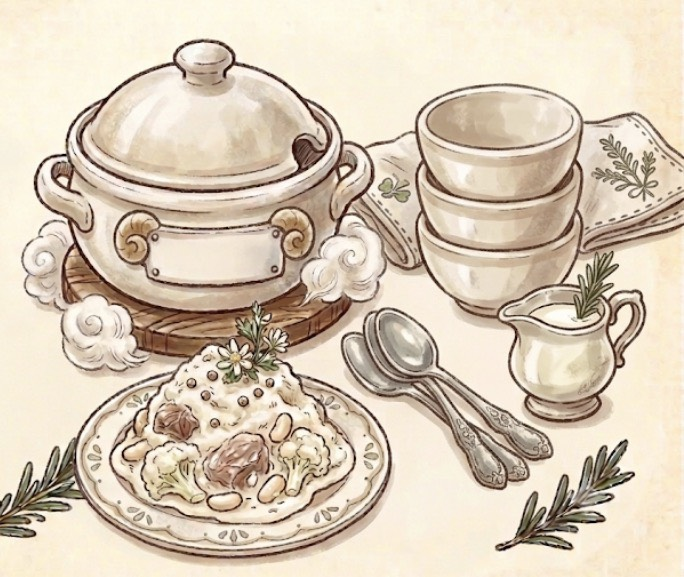

Menu
-

- メェ〜ラム（ラムチョップ）／¥1,880
- 骨付きラムを塩・黒胡椒・ローズマリーでシンプルに焼き上げ。表面は香ばしく、中はミディアムレアでジューシー。羊特有の香りは残しつつ、クミンを効かせた自家製ヨーグルトソースで爽やかにまとめてます。
-

- もこもこジンギスカン／¥1,580（1人前）
- 生ラム肩ロースを特製の甘辛タレに漬け込み。玉ねぎ・もやし・かぼちゃと一緒に。タレは醤油ベースにりんごとにんにくで軽い甘み、後味に生姜がピリッと。ふわふわの泡状ソースを乗せて「もこもこ」を演出。
-

- 牧場の午睡（ひるね）プレート／¥1,280
- 前菜7種盛り合わせ。ラムのリエット、羊乳チーズ（ペコリーノ）、ミントのマリネ、オリーブなど。全体的に軽めで、ワインに合う塩気とハーブ主体のさっぱりした味。ランチの一皿目にちょうどいい量。
-

- 100匹目の羊バーガー／¥1,680
- ラムひき肉100%のパティに、羊乳チーズとカラメリゼした玉ねぎ。スパイスはクミン・コリアンダーでエスニック寄り。濃厚だけどミントのフレッシュソースで重すぎない。ボリューム満点で夜でも満足感◎。
-

- ウールホワイトシチュー／¥1,380
- 羊乳と生クリームベースの真っ白なシチュー。ほろほろに煮込んだラムすね肉、白いんげん豆、カリフラワー。羊乳のコクでまろやかだけど、白胡椒でほんのり後味を締めてます。パン付き。